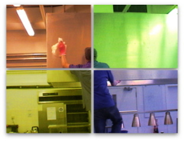

<div id="features">
    <div class="container">
        <div class="row header">
            <div class="col-md-12">
                <h2>Lo-Fa-Rén rengøring</h2>
                <p>Information om den rengøringsservice LoFaRen tilbyder.</p>
            </div>
        </div>
        <div class="row feature">
            <div class="col-md-6 info">
                <h4>Erfaringen lyver ikke, men hvad kan vi tilbyde?</h4>
                <p>
 LoFaRen tilbyder erhvervs- og håndværkerrengøring. I mere end 34 år har vi med professionalisme og ansvarsbevidsthed taget os af rengøringen hos firmaer af varierende art og størrelse. Der foruden tager vi os af håndværkerrengøring bl.a. af nøglefærdige huse.
</p>
<p>
I firmaet sætter vi en ære i, altid at have nyt udstyr som giver den bedste rengøring. Vi sætter os ind i nye teknikker og metoder, som optimerer rengøringen samt er så miljøvenlig som mulig.
</p>
<p>
Ring gerne for nærmere oplysninger eller for et tilbud, hvor vi kommer og ser på jeres lokaler.
</p>
            </div>
            <div class="col-md-6 image">

                
            </div>
        </div>
        <div class="row feature">
            <div class="col-md-12 info">
                <h4>Renovering og pleje af træ- og linoleumsgulve</h4>
                <p>
                    Afrensning og opskuring, Genopbygning, Oliering, Ludbehandling eller behandling med voks, Pleje
Alt arbejde udføres professionelt med nye maskiner.
Ring gerne og høre mere om mulighederne og procedurene for netop jeres gulve.                   
                </p>
            </div>
        </div>
        
    </div>
</div>


